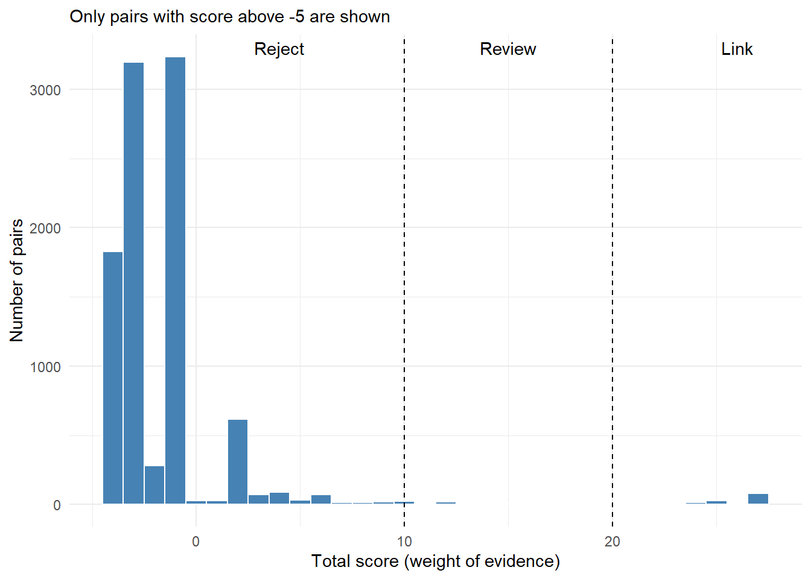

library(tidyverse)
library(stringdist) # string similarity, see @sec-strsim
library(cagmetaphone) # phonetic codes, see @sec-strsim34 Record Linkage
Some of the most important audit findings come not from one data set, but from putting two together.
- Old-age pension still being paid to persons who appear in the death register.
- Government employees, or income tax payers, drawing benefits meant for the poor.
- The same farmer taking the same subsidy under two schemes, or in two districts.
- A student receiving scholarships from two States.
- An employee who is secretly the proprietor of a supplier firm.
In each case, we have to find the same person in two lists. If both lists carried a reliable common number, such as an Aadhaar number seeded in both, this would be a simple join, which we learnt in Chapter 14. But very often they do not. The death register has no pension ID. The scheme lists were made by different departments, at different times, by different data entry operators. The same person is written as Kamla Devi in one and Smt. Kamala Devi in the other, with an age that differs by a year and a village spelt two ways.
Record linkage is the craft of finding records which belong to the same person (or firm, or property) when there is no common key, using several imperfect details together. It is also called record matching, entity resolution or, when done within one list, deduplication. In this chapter we learn it from the beginning, step by step, on a realistic example.
Prerequisites
We use the string similarity measures of Chapter 33, especially Jaro-Winkler similarity, and Double Metaphone phonetic codes. Readers new to them may read that chapter first.
34.1 Why a simple join is not enough
Let us start with a tiny example, three pensioners and three death records.
pension_list <- tibble(
ben_id = c("P1", "P2", "P3"),
name = c("Kamla Devi", "Ramesh Yadav", "Sita Ram Verma"),
relation_name = c("Mohan Lal", "Jagdish Yadav", "Bhagwan Verma"),
village = c("Amarpur", "Chandanpura", "Daulatpur"),
age_2024 = c(72, 81, 68)
)
death_register <- tibble(
reg_no = c("D101", "D102", "D103"),
name = c("Smt. Kamala Devi", "Ramesh Yadav", "Sitaram Verma"),
relation_name = c("Mohan Lal", "Rakesh Yadav", "Bhagwan Varma"),
village = c("Amarpur", "Chandanpura", "Daulatpur"),
age_at_death = c(73, 45, 68)
)An exact join on name and village finds only one pair.
pension_list |>
inner_join(death_register, by = c("name", "village"), suffix = c("_pension", "_death")) |>
select(name, village, relation_name_pension, relation_name_death, age_2024, age_at_death)# A tibble: 1 × 6
name village relation_name_pension relation_name_death age_2024 age_at_death
<chr> <chr> <chr> <chr> <dbl> <dbl>
1 Rames… Chanda… Jagdish Yadav Rakesh Yadav 81 45And that one pair is wrong! Ramesh Yadav of Chandanpura in the death register is a different person. His father’s name is Rakesh, not Jagdish, and he died at 45, while our pensioner is 81. Meanwhile the join has missed both true pairs. Kamla Devi and Smt. Kamala Devi, with the same husband, village and nearly the same age, are surely the same person. So are Sita Ram Verma and Sitaram Verma.
Two lessons follow, and the rest of the chapter builds on them.
- Names alone are not enough. Common names repeat, especially within a village. We must use several details together: name, father’s or husband’s name, age, village.
- Each detail must be compared with tolerance, allowing for spelling variations, titles, and small differences in age.
34.2 The steps of record linkage
Every record linkage, however large, follows the same seven steps. We will go through each with our example.
| Step | What we do | Why |
|---|---|---|
| 1. Standardise | Clean each field in the same way in both lists | Remove differences that do not matter, like titles and punctuation |
| 2. Block | Choose which pairs of records to compare | Comparing every record with every other is too slow |
| 3. Compare | Measure how closely each field agrees, for each pair | Allow for spelling and age differences |
| 4. Weigh | Turn the agreements into a total score of evidence | Agreement on a rare detail counts more than on a common one |
| 5. Decide | Link, review by hand, or reject each pair, by its score | Not every pair can be decided by the data alone |
| 6. One-to-one | Keep the best partner for each record | A person can die only once |
| 7. Check | Verify the links, and measure the quality | Every link becomes an audit observation |
34.3 Our data, pensioners and the death register
We have the list of 3,000 beneficiaries of an old-age pension scheme in a development block, all being paid ₹1,000 a month (₹1,500 for those aged 80 or more) as on 31 March 2025. We also have the death register of the same block for April 2022 to December 2024, with 1,212 entries. The audit question is: are any of the pensioners in the death register, and still being paid?
The two lists were prepared independently. The pension list records the date of birth. The death register, as is common, records only the age at death, often as told by a relative, and so often rounded to a multiple of five. Names are written with variations, and some death records have no father’s or husband’s name.
The code below creates the data. It is long, because it imitates the many ways in which real records differ. New readers may skip it. What matters is that, unknown to the auditor, 150 of the pensioners died during the period, and their death records carry the kinds of variation described above. We also planted a dozen traps: deaths of other persons who share the name and village of a living pensioner. Since the data are simulated, we keep the true answer in a separate table, truth, only to measure how well our linkage works at the end. In a real audit there is no such table.
Code to create the pension list and death register
set.seed(2024)
male_first <- c("Ram", "Shyam", "Mohan", "Sohan", "Ramesh", "Suresh", "Mahesh", "Dinesh",
"Rajendra", "Surendra", "Mahendra", "Narendra", "Om", "Jagdish", "Harish",
"Krishna", "Gopal", "Govind", "Bhagwan", "Hari", "Shiv", "Shankar", "Prem",
"Kailash", "Laxman", "Bharat", "Sita Ram", "Ram Prasad", "Kishan", "Babu",
"Bansi", "Chhote", "Mangal", "Budhram", "Rameshwar", "Ganga Ram", "Dayaram",
"Mohd Yusuf", "Abdul Rashid", "Gurmeet")
female_first <- c("Kamla", "Shanti", "Lakshmi", "Savitri", "Sarla", "Sushila", "Kaushalya",
"Bimla", "Vimla", "Ramkali", "Phoolwati", "Geeta", "Sita", "Radha", "Parvati",
"Durga", "Kalawati", "Bhagwati", "Shakuntala", "Urmila", "Pushpa", "Krishna",
"Gayatri", "Chandrakala", "Munni", "Ramrati", "Sumitra", "Kesar", "Sughra",
"Jaswant Kaur")
surnames <- c("Verma", "Sharma", "Yadav", "Singh", "Kushwaha", "Patel", "Maurya", "Gupta",
"Prajapati", "Pal", "Lodhi", "Rajput", "Ahirwar", "Kori", "Khan", "Ansari",
"Tiwari", "Mishra", "Pandey", "Chaurasia", "Sahu", "Rathore", "Jatav",
"Baghel", "Kumar")
villages <- c("Amarpur", "Bhagwantpur", "Chandanpura", "Daulatpur", "Fatehgarh", "Gopalganj",
"Hariharpur", "Islamnagar", "Jamunia", "Kakrahi", "Lalpur", "Madhopur",
"Nayagaon", "Pipariya", "Rajapur", "Sahjanpur", "Tilakpur", "Umaria",
"Vishnupura", "Barkheda", "Khajuri", "Semri", "Bilkheda", "Dhaneta",
"Kesli", "Mehgaon", "Narsinghpur Khurd", "Pathariya", "Rampura", "Sukha",
"Tikamgarh Kalan", "Udaipura", "Bamhori", "Chhapra", "Gadarwara", "Hirapur",
"Imlia", "Jaitpur", "Kundalpur", "Lakhanpur")
n_pen <- 3000
pensioners <- tibble(
ben_id = sprintf("OAP-%05d", 1:n_pen),
gender = sample(c("M", "F"), n_pen, TRUE),
surname = sample(surnames, n_pen, TRUE),
rel_first = sample(male_first, n_pen, TRUE),
village = sample(villages, n_pen, TRUE),
dob = as.Date("1925-01-01") + sample(0:(365 * 36), n_pen, TRUE),
mobile = if_else(runif(n_pen) < 0.55,
paste0(sample(6:9, n_pen, TRUE), sprintf("%09d", sample(0:999999999, n_pen, TRUE))),
NA_character_)
) |>
mutate(first = if_else(gender == "M", sample(male_first, n_pen, TRUE),
sample(female_first, n_pen, TRUE)),
name = if_else(gender == "M" | runif(n_pen) < 0.5, paste(first, surname),
paste(first, "Devi")),
relation_name = paste(rel_first, surname),
pension = if_else(as.numeric(as.Date("2025-03-31") - dob) / 365.25 >= 80, 1500, 1000)) |>
select(ben_id, name, relation_name, gender, dob, village, mobile, pension)
# Ways in which the death register writes the same name differently
variants <- c("Lakshmi" = "Laxmi", "Kamla" = "Kamala", "Bimla" = "Vimla", "Shanti" = "Santi",
"Sushila" = "Susheela", "Savitri" = "Savitree", "Kaushalya" = "Kausalya",
"Phoolwati" = "Phulwati", "Ramkali" = "Ram Kali", "Jagdish" = "Jagdeesh",
"Rajendra" = "Rajendar", "Surendra" = "Surender", "Mahendra" = "Mahender",
"Narendra" = "Narender", "Kailash" = "Kelash", "Laxman" = "Lakshman",
"Prasad" = "Parsad", "Yadav" = "Yadaw", "Kushwaha" = "Kushwah",
"Prajapati" = "Prajapti", "Chaurasia" = "Chourasia", "Ahirwar" = "Aharwar",
"Maurya" = "Mourya", "Mohd" = "Mohammad", "Rameshwar" = "Rameshwer",
"Sita Ram" = "Sitaram", "Ganga Ram" = "Gangaram", "Dayaram" = "Daya Ram",
"Chhote" = "Chote", "Shakuntala" = "Sakuntala", "Pushpa" = "Puspa",
"Gayatri" = "Gaytri", "Urmila" = "Urmilla", "Tiwari" = "Tiwary")
typo <- function(x) { # drop one letter from the middle
map_chr(x, \(s) {
pos <- 2 + sample.int(max(1, nchar(s) - 3), 1)
paste0(substr(s, 1, pos - 1), substr(s, pos + 1, nchar(s)))
})
}
apply_variant <- function(x) {
map_chr(x, \(s) {
hits <- names(variants)[str_detect(s, fixed(names(variants)))]
if (length(hits) == 0) return(s)
h <- sample(hits, 1)
str_replace(s, fixed(h), variants[[h]])
})
}
messy <- function(x, p_variant, p_typo) {
v <- runif(length(x)) < p_variant
x[v] <- apply_variant(x[v])
t <- runif(length(x)) < p_typo
x[t] <- typo(x[t])
x
}
# Planted. 150 pensioners died, but are still on the pension list
dead <- pensioners |>
slice_sample(n = 150) |>
mutate(date_of_death = as.Date("2022-04-01") + sample(0:1004, n(), TRUE),
true_age = floor(as.numeric(date_of_death - dob) / 365.25))
recorded <- dead |>
mutate(
reg_name = messy(name, 0.45, 0.15),
reg_name = case_when(runif(n()) < 0.12 ~ paste("Late", reg_name),
runif(n()) < 0.12 & gender == "F" ~ paste("Smt.", reg_name),
runif(n()) < 0.10 & gender == "M" ~ paste("Shri", reg_name),
.default = reg_name),
reg_relation = messy(relation_name, 0.4, 0.15),
reg_relation = if_else(runif(n()) < 0.08, NA_character_, reg_relation),
reg_age = true_age + sample(c(0, 0, 0, 0, 1, -1, 1, 2, -2), n(), TRUE),
reg_age = if_else(runif(n()) < 0.15, 5 * round(true_age / 5), reg_age), # age rounded
reg_village = messy(village, 0, 0.12)
)
# Deaths of other persons in the block
n_other <- 1050
others <- tibble(
gender = sample(c("M", "F"), n_other, TRUE),
surname = sample(surnames, n_other, TRUE),
rel_first = sample(male_first, n_other, TRUE),
reg_village = sample(villages, n_other, TRUE),
reg_age = sample(35:95, n_other, TRUE),
date_of_death = as.Date("2022-04-01") + sample(0:1004, n_other, TRUE)
) |>
mutate(first = if_else(gender == "M", sample(male_first, n_other, TRUE),
sample(female_first, n_other, TRUE)),
reg_name = if_else(gender == "M" | runif(n_other) < 0.5, paste(first, surname),
paste(first, "Devi")),
reg_relation = paste(rel_first, surname))
# Planted traps. Same name and village as a living pensioner, but a different person
alive <- pensioners |> anti_join(dead, by = "ben_id") |> slice_sample(n = 12)
traps <- alive |>
transmute(gender, reg_name = name, reg_village = village,
reg_relation = paste(sample(male_first, 12, TRUE), word(name, -1)),
reg_age = sample(40:58, 12, TRUE),
date_of_death = as.Date("2022-04-01") + sample(0:1004, 12, TRUE))
deaths <- bind_rows(
recorded |> select(ben_id, reg_name, reg_relation, gender, reg_age, date_of_death, reg_village),
others |> select(reg_name, reg_relation, gender, reg_age, date_of_death, reg_village),
traps
) |>
slice_sample(prop = 1) |>
mutate(reg_no = sprintf("D/%d/%04d", year(date_of_death), row_number()), .before = 1)
truth <- deaths |> filter(!is.na(ben_id)) |> select(reg_no, ben_id) # known only in simulation
deaths <- deaths |>
select(reg_no, name = reg_name, relation_name = reg_relation, gender,
age_at_death = reg_age, date_of_death, village = reg_village)pensioners# A tibble: 3,000 × 8
ben_id name relation_name gender dob village mobile pension
<chr> <chr> <chr> <chr> <date> <chr> <chr> <dbl>
1 OAP-00001 Parvati Devi Sohan Chaura… F 1958-12-22 Tikamg… 68664… 1000
2 OAP-00002 Krishna Gup… Ram Gupta M 1947-03-26 Jamunia <NA> 1000
3 OAP-00003 Ganga Ram C… Om Chaurasia M 1959-09-30 Umaria 64313… 1000
4 OAP-00004 Geeta Devi Shiv Jatav F 1929-11-30 Tilakp… 87486… 1500
5 OAP-00005 Narendra Ra… Bhagwan Rath… M 1956-06-16 Hirapur 67852… 1000
6 OAP-00006 Mahendra Pal Budhram Pal M 1935-05-05 Jaitpur 68478… 1500
7 OAP-00007 Rajendra Ku… Narendra Kum… M 1946-04-19 Kakrahi 85627… 1000
8 OAP-00008 Pushpa Tiwa… Gurmeet Tiwa… F 1939-09-21 Tikamg… 62873… 1500
9 OAP-00009 Kishan Verma Dinesh Verma M 1954-07-19 Udaipu… <NA> 1000
10 OAP-00010 Parvati Devi Govind Maurya F 1949-09-30 Sahjan… 75168… 1000
# ℹ 2,990 more rowsdeaths# A tibble: 1,212 × 7
reg_no name relation_name gender age_at_death date_of_death village
<chr> <chr> <chr> <chr> <dbl> <date> <chr>
1 D/2024/0001 Shakunta… Abdul Rashid… F 54 2024-08-25 Sahjan…
2 D/2023/0002 Prem Sha… Kishan Sharma M 67 2023-08-22 Jaitpur
3 D/2023/0003 Babu Cha… Narendra Cha… M 42 2023-03-02 Imlia
4 D/2024/0004 Jaswant … Dinesh Verma F 49 2024-04-28 Semri
5 D/2022/0005 Bimla Pal Chhote Pal F 76 2022-04-27 Sahjan…
6 D/2022/0006 Bhagwan … Abdul Rashid… M 74 2022-11-07 Narsin…
7 D/2024/0007 Radha Ba… Krishna Bagh… F 72 2024-03-30 Mehgaon
8 D/2024/0008 Harish P… Mahendra Pan… M 57 2024-02-18 Udaipu…
9 D/2023/0009 Kailash … Sohan Singh M 50 2023-10-26 Dhaneta
10 D/2022/0010 Sushila … Mahesh Ratho… F 46 2022-09-07 Chhapra
# ℹ 1,202 more rows34.4 Step 1. Standardise
First, we remove the differences that carry no information. We write one function and apply it to every text field in both lists, so that both are cleaned in exactly the same way. It is similar to the clean_name() function of Chapter 33, with words common in death registers, like Late, added.
std_text <- function(x) {
x |>
str_to_lower() |>
str_replace_all("[[:punct:]]", " ") |>
str_replace_all("\\b(late|shri|sri|smt|shrimati|mr|mrs)\\b", " ") |>
str_replace_all("\\b(mohd|md)\\b", "mohammad") |>
str_squish()
}
std_text(c("Late Shri Ram Prasad", "Smt. Kamala Devi", "Mohd. Yusuf Khan"))[1] "ram prasad" "kamala devi" "mohammad yusuf khan"For comparing names, we also remove the spaces, so that Sita Ram and Sitaram, or Ram Kali and Ramkali, become identical. We keep the version with spaces too, because we need the first word for blocking in the next step.
prepare <- function(df) {
df |>
mutate(name_std = std_text(name),
name_cmp = str_remove_all(name_std, " "),
rel_cmp = str_remove_all(std_text(relation_name), " "),
village_cmp = str_remove_all(std_text(village), " "),
# phonetic code of the first word of the name, used for blocking
name_code = double_metaphone_vec(word(name_std, 1))$primary)
}
pen <- prepare(pensioners)
dth <- prepare(deaths)
dth |> select(name, name_cmp, relation_name, rel_cmp, name_code) |> head()# A tibble: 6 × 5
name name_cmp relation_name rel_cmp name_code
<chr> <chr> <chr> <chr> <chr>
1 Shakuntala Rajput shakuntalarajput Abdul Rashid Rajput abdulrashid… XKNTL
2 Prem Sharma premsharma Kishan Sharma kishansharma PRM
3 Babu Chaurasia babuchaurasia Narendra Chaurasia narendracha… PP
4 Jaswant Kaur Verma jaswantkaurverma Dinesh Verma dineshverma JSNT
5 Bimla Pal bimlapal Chhote Pal chhotepal PML
6 Bhagwan Patel bhagwanpatel Abdul Rashid Patel abdulrashid… PKN
TipAudit tip
Standardise both lists with the same function. A cleaning step applied to only one list creates differences instead of removing them. And always keep the original columns. The cleaned versions are for the computer; the original names are what we report.
34.5 Step 2. Block
How many pairs could we compare?
That is more than 36 lakh pairs, for a single block. For a district, or a State, comparing every pair becomes impossible. But we do not need to. A pensioner of Amarpur is very unlikely to appear in the death register under Pipariya. So we compare only pairs which share a blocking key, here the same village and the same gender. A blocking key is a cheap test which every true pair is expected to pass.
pairs_village <- pen |>
inner_join(dth, by = c("village_cmp", "gender"), relationship = "many-to-many") |>
select(ben_id, reg_no)
nrow(pairs_village)[1] 44856Blocking has reduced the work about 80 times. But it has a cost. If a true pair fails the blocking test, it is never compared, and so never found. Here, a death record whose village is misspelt, say Chandanpur for Chandanpura, would never be compared with the right pensioner.
The usual remedy is to block twice, with two different keys, and combine the pairs. Our second key is the phonetic code of the first word of the name, with gender. A misspelt village is now caught through the name, and a misspelt name through the village. Only a record with both wrong slips through.
village_block name_block combined
44856 53848 97185 We now have 97,185 pairs to compare instead of 36 lakh. Since our data are simulated, we can peek at how many of the 150 true pairs survived. The village block alone kept 132, the name block alone 133, and the two together 147. Two keys are clearly better than one.
Note
Good blocking keys are fields that are rarely wrong and split the data into many small groups: village or PIN code, year of birth, gender, or a phonetic code of the surname. A key that is often wrong loses true pairs, and a key with few values, like gender alone, saves little work.
34.6 Step 3. Compare
For each pair, we now compare the fields one by one.
- Name, father’s or husband’s name and village, with Jaro-Winkler similarity (Chapter 33), which gives 1 for identical strings and less for different ones.
- Age. The pension list has the date of birth, and the death register the age at death. From the date of birth and the date of death we can work out what the pensioner’s age would have been at that death, and compare it with the recorded age.
compared <- pairs |>
left_join(pen |> select(ben_id, name_p = name_cmp, rel_p = rel_cmp,
village_p = village_cmp, dob), by = "ben_id") |>
left_join(dth |> select(reg_no, name_d = name_cmp, rel_d = rel_cmp,
village_d = village_cmp, age_at_death, date_of_death), by = "reg_no") |>
mutate(name_sim = stringsim(name_p, name_d, method = "jw", p = 0.1),
rel_sim = stringsim(rel_p, rel_d, method = "jw", p = 0.1),
village_sim = stringsim(village_p, village_d, method = "jw", p = 0.1),
age_gap = abs(floor(as.numeric(date_of_death - dob) / 365.25) - age_at_death))
# a few pairs whose names are close but not identical
compared |>
filter(name_sim > 0.9, name_sim < 1, !is.na(rel_sim)) |>
select(name_p, name_d, rel_p, rel_d, name_sim, rel_sim, village_sim, age_gap) |>
mutate(across(ends_with("sim"), \(x) round(x, 2))) |>
arrange(age_gap) |>
slice(c(1:3, n() - 2:0)) # three with close ages, three far apart# A tibble: 6 × 8
name_p name_d rel_p rel_d name_sim rel_sim village_sim age_gap
<chr> <chr> <chr> <chr> <dbl> <dbl> <dbl> <dbl>
1 radhamishra radhamisra gang… gang… 0.98 1 1 0
2 surendrajatav surenderjatav dine… dine… 0.94 0.98 1 0
3 shakuntalasahu shakuntalaver… ramp… mahe… 0.9 0.5 1 0
4 gayatridevi gayatriyadav prem… kish… 0.91 0.44 0.66 62
5 mahendrakori mahendralodhi mang… sure… 0.92 0.52 0.48 63
6 gayatridevi gayatriyadav raje… kish… 0.91 0.54 0.67 63The first two, with the same age and nearly the same father’s name, look like the same person written differently (Misra for Mishra, Surender for Surendra). The third has the same first name and age, but a different surname and father, so is probably someone else. The last three, decades apart in age, are clearly different people, despite their similar names. No single field decides; we need to weigh them together.
Similarities are numbers between 0 and 1. To weigh them in the next step, it is simpler to sort each comparison into a few levels.
| Field | Agree | Partly agree | Disagree | Far apart |
|---|---|---|---|---|
| Name | similarity 0.95 or more | 0.90 to 0.95 | below 0.90 | |
| Father’s or husband’s name | 0.95 or more | 0.90 to 0.95 | below 0.90 | |
| Village | 0.88 or more | below 0.88 | ||
| Age | differs by 0 or 1 year | 2 or 3 years | 4 to 10 years | more than 10 years |
A missing father’s or husband’s name gives the level missing. The age levels allow for the common rounding of age in death registers. A gap of more than 10 years is almost impossible for the same person, so it gets a level of its own. We write the levels as a function, because we will need it twice.
add_levels <- function(df) {
df |>
mutate(
name_lvl = case_when(name_sim >= 0.95 ~ "agree", name_sim >= 0.90 ~ "partial",
.default = "disagree"),
rel_lvl = case_when(is.na(rel_sim) ~ "missing", rel_sim >= 0.95 ~ "agree",
rel_sim >= 0.90 ~ "partial", .default = "disagree"),
village_lvl = if_else(village_sim >= 0.88, "agree", "disagree"),
age_lvl = case_when(age_gap <= 1 ~ "agree", age_gap <= 3 ~ "partial",
age_gap <= 10 ~ "disagree", .default = "far"))
}
compared <- add_levels(compared)34.7 Step 4. Weigh the evidence
Now the central question. For a given pair, the name agrees, the village agrees, the age is two years off and the father’s name is missing. Is that the same person? We need a way to add up the evidence. The method used almost everywhere, by statistics offices and census bureaus, was set out by Fellegi and Sunter in 1969. Its idea is simple, and every auditor already uses it by instinct.
Not all agreements are equal. Suppose two records agree on gender. That means almost nothing, since half of all pairs of people agree on gender by chance. Now suppose they agree on the full name Rameshwar Kushwaha. That means a lot, because two different people rarely share such a name. Agreement on something that is rarely shared by chance is strong evidence.
For each field, and each level, we need two probabilities.
- m, the chance of this level when the two records are the same person. It measures how reliable the field is. If the same person’s name is written identically in both lists 85% of the time, then m for name “agree” is 0.85.
- u, the chance of this level when the two records are different people. It measures coincidence. If two random people have matching names once in 400 pairs, then u for name “agree” is 0.0025.
The weight of the evidence is then
\[\text{weight} = \log_2\left(\frac{m}{u}\right)\]
If m is much larger than u, the level is far more likely for a true pair than for a false one, and the weight is large and positive. If m is smaller than u, as for “disagree”, the weight is negative, evidence against a match. The logarithm to base 2 makes the weights add up. Each point of weight doubles the odds that the pair is a match.
Estimating u. The chance of a coincidence can be measured from the data itself. Pair up records at random, thousands of times. Almost all random pairs are different people, so the share of random pairs at each level is a good estimate of u. We must use random pairs, not our blocked pairs, because pairs from the same village obviously agree on village far more often than random people do.
set.seed(99)
random_pairs <- tibble(i = sample(nrow(pen), 20000, TRUE),
j = sample(nrow(dth), 20000, TRUE)) |>
transmute(name_sim = stringsim(pen$name_cmp[i], dth$name_cmp[j], method = "jw", p = 0.1),
rel_sim = stringsim(pen$rel_cmp[i], dth$rel_cmp[j], method = "jw", p = 0.1),
village_sim = stringsim(pen$village_cmp[i], dth$village_cmp[j], method = "jw", p = 0.1),
age_gap = abs(floor(as.numeric(dth$date_of_death[j] - pen$dob[i]) / 365.25) -
dth$age_at_death[j])) |>
add_levels()
u_values <- bind_rows(
random_pairs |> count(level = name_lvl) |> mutate(field = "name"),
random_pairs |> count(level = rel_lvl) |> mutate(field = "relation"),
random_pairs |> count(level = village_lvl) |> mutate(field = "village"),
random_pairs |> count(level = age_lvl) |> mutate(field = "age")
) |>
mutate(u = n / sum(n), .by = field) |>
select(field, level, u)Setting m. The reliability of each field is set from experience, and checked against a few pairs confirmed by hand. In our district, names are written the same way in most records, villages almost always, and ages, because of rounding, are often a year or two off.
m_values <- tribble(
~field, ~level, ~m,
"name", "agree", 0.85,
"name", "partial", 0.12,
"name", "disagree", 0.03,
"relation", "agree", 0.80,
"relation", "partial", 0.10,
"relation", "disagree", 0.03,
"village", "agree", 0.98,
"village", "disagree", 0.02,
"age", "agree", 0.75,
"age", "partial", 0.20,
"age", "disagree", 0.045,
"age", "far", 0.005
)
weights <- m_values |>
left_join(u_values, by = c("field", "level")) |>
mutate(weight = round(log2(m / u), 2))
weights |> mutate(u = signif(u, 2))# A tibble: 12 × 5
field level m u weight
<chr> <chr> <dbl> <dbl> <dbl>
1 name agree 0.85 0.0024 8.44
2 name partial 0.12 0.0022 5.74
3 name disagree 0.03 1 -5.05
4 relation agree 0.8 0.0012 9.32
5 relation partial 0.1 0.004 4.66
6 relation disagree 0.03 0.99 -5.04
7 village agree 0.98 0.025 5.3
8 village disagree 0.02 0.98 -5.61
9 age agree 0.75 0.054 3.8
10 age partial 0.2 0.068 1.56
11 age disagree 0.045 0.21 -2.25
12 age far 0.005 0.67 -7.06Read the table like a reviewer. Agreement on the name adds 8.44 points, because a coincidental name match is rare. Agreement on the village adds only 5.3, because one in 40 random pairs share a village anyway. An age more than 10 years apart takes away 7.06 points, strong evidence that these are two different people. A missing father’s name gives no evidence either way, so we give it a weight of 0.
Now each pair gets a total score, the sum of its weights.
weight_of <- function(field, level) {
weights$weight[match(paste(field, level), paste(weights$field, weights$level))]
}
scored <- compared |>
mutate(w_name = weight_of("name", name_lvl),
w_relation = if_else(rel_lvl == "missing", 0, weight_of("relation", rel_lvl)),
w_village = weight_of("village", village_lvl),
w_age = weight_of("age", age_lvl),
score = w_name + w_relation + w_village + w_age)Let us see how the score handles the two kinds of difficult pair we met at the start: a true pair written differently, and a trap, two different persons with the same name in the same village.
# A tibble: 2 × 10
name_p name_d rel_p rel_d age_gap w_name w_relation w_village w_age score
<chr> <chr> <chr> <chr> <dbl> <dbl> <dbl> <dbl> <dbl> <dbl>
1 urmiladevi urmil… shiv… laxm… 35 8.44 -5.04 5.3 -7.06 1.64
2 radhamishra radha… gang… gang… 0 8.44 9.32 5.3 3.8 26.9 The first row has the same name and village, but a different father’s or husband’s name and an age gap of 35 years. Its score of 1.6 says clearly that these are two different persons, however alike the names. A name-only match would have reported this pensioner as dead. The second row agrees on everything, and scores 26.9.
34.8 Step 5. Decide
Let us look at the scores of all the pairs.
scored |>
filter(score > -5) |>
ggplot(aes(score)) +
geom_histogram(binwidth = 1, fill = "steelblue", colour = "white") +
geom_vline(xintercept = c(10, 20), linetype = "dashed") +
annotate("text", x = c(4, 15, 26), y = Inf, vjust = 1.5,
label = c("Reject", "Review", "Link")) +
labs(x = "Total score (weight of evidence)", y = "Number of pairs",
subtitle = "Only pairs with score above -5 are shown") +
theme_minimal()
Most pairs score far below zero, and are clearly different people. A separate hump of high scores on the right holds the likely matches. In between is a grey zone. So we set two cut-offs, not one.
- Score of 20 or more: link. The evidence is overwhelming.
- Score from 10 to 20: review. The data cannot decide. These pairs go for manual checking, of the files, or in the field.
- Score below 10: reject.
The cut-offs are chosen by reading the pairs around them, as in Chapter 33, and by how many pairs the audit team can review. They are not fixed numbers to be used everywhere.
34.9 Step 6. One record, one partner
A pensioner can die only once, and a death record belongs to only one person. But a common name may give a death record high scores with two pensioners. We keep, for each record, only its best partner. The simplest way is to go down the pairs from the highest score, and accept a pair only if neither of its records has been used already.
one_to_one <- function(candidates) {
candidates <- candidates |> arrange(desc(score))
used_ben <- character()
used_reg <- character()
keep <- logical(nrow(candidates))
for (k in seq_len(nrow(candidates))) {
if (!(candidates$ben_id[k] %in% used_ben) && !(candidates$reg_no[k] %in% used_reg)) {
keep[k] <- TRUE
used_ben <- c(used_ben, candidates$ben_id[k])
used_reg <- c(used_reg, candidates$reg_no[k])
}
}
candidates[keep, ]
}
decided <- scored |>
filter(score >= 10) |>
one_to_one() |>
mutate(decision = if_else(score >= 20, "Link", "Review"))
count(decided, decision)# A tibble: 2 × 2
decision n
<chr> <int>
1 Link 127
2 Review 50We used a for loop from Chapter 6, because each decision depends on the ones before it.
34.10 Step 7. Check the result
In a real audit, we would now verify a sample of the links from the files, and all the review cases, before reporting anything. Since our data are simulated, we can also measure exactly how well the linkage did, using the truth table.
# A tibble: 2 × 3
decision pairs true_pairs
<chr> <int> <int>
1 Link 127 127
2 Review 50 18- All 127 automatic links are in fact true pairs (127 correct). The two-cut-off design keeps automatic decisions to the cases where the evidence is overwhelming.
- The 50 pairs for review contain 18 more true pairs. The rest are different persons with similar details, mostly the same common name in the same village with a different father’s name, which a reviewer can reject quickly.
- Of the 150 deceased pensioners, 5 were not found at all. Some were lost at blocking, with both the village and the name written differently. Others lost out to a namesake in step 6.
Let us look at one of the hard cases.
hard_case <- dth |> filter(name_cmp == "ramratidevi", village_cmp == "kundalpur", is.na(rel_cmp))
scored |>
filter(reg_no %in% hard_case$reg_no, score >= 10) |>
left_join(truth |> mutate(true_pair = TRUE), by = c("reg_no", "ben_id")) |>
mutate(true_pair = coalesce(true_pair, FALSE)) |>
select(reg_no, ben_id, name_p, name_d, rel_p, rel_d, age_gap, score, true_pair)# A tibble: 3 × 9
reg_no ben_id name_p name_d rel_p rel_d age_gap score true_pair
<chr> <chr> <chr> <chr> <chr> <chr> <dbl> <dbl> <lgl>
1 D/2022/0959 OAP-00355 ramratidevi ramrati… govi… <NA> 1 17.5 FALSE
2 D/2022/0959 OAP-01092 ramratidevi ramrati… shan… <NA> 0 17.5 TRUE
3 D/2022/0959 OAP-01286 ramratidevi ramrati… mahe… <NA> 0 17.5 FALSE A Ramrati Devi of Kundalpur appears in the death register without her husband’s name. Three pensioners of that name live in Kundalpur, and all three have an age within a year of the recorded age. On the record, they are equally likely, with the same score. Step 6 had to pick one, and picked the wrong one. No method can decide such a case from the data. It needs a visit, or a look at the death certificate. This is the honest limit of record linkage, and why its results are leads for verification, never findings by themselves.
Caution
Record linkage always makes some mistakes in both directions: false links, and missed links. A false link can mean stopping the pension of a living, poor person. So never act, or report, on a link without verifying it. Report the method, the cut-offs and the number of links verified, along with the findings.
34.11 The audit finding
Let us now value the finding, for the automatic links, assuming that each was verified. Pension continued after the month of death until March 2025.
overpaid <- decided |>
filter(decision == "Link") |>
left_join(pensioners |> select(ben_id, name, village, pension), by = "ben_id") |>
left_join(deaths |> select(reg_no, death_name = name), by = "reg_no") |>
mutate(months_after_death = interval(date_of_death, as.Date("2025-03-31")) %/% months(1),
amount = months_after_death * pension)
overpaid |>
select(ben_id, name, death_name, village, date_of_death, months_after_death, amount) |>
arrange(desc(amount)) |>
head(8)# A tibble: 8 × 7
ben_id name death_name village date_of_death months_after_death amount
<chr> <chr> <chr> <chr> <date> <dbl> <dbl>
1 OAP-01645 Gayatri … Gatri Devi Rampura 2022-04-15 35 52500
2 OAP-01857 Om Singh Om Singh Umaria 2022-04-01 35 52500
3 OAP-00385 Prem Cha… Pre Chaur… Rajapur 2022-04-07 35 52500
4 OAP-01584 Bharat J… Bharat Ja… Khajuri 2022-04-24 35 52500
5 OAP-00550 Sohan Ko… Sohan Kori Bilkhe… 2022-05-28 34 51000
6 OAP-02974 Sughra D… Sughra evi Amarpur 2022-05-07 34 51000
7 OAP-01353 Sushila … Late Sush… Hirapur 2022-05-07 34 51000
8 OAP-02011 Shanti D… Sani Devi Nayaga… 2022-05-25 34 51000# A tibble: 1 × 2
deceased_pensioners total_overpaid
<int> <dbl>
1 127 3039500Pension of about ₹30.4 lakh was paid to 127 persons after their death, in one block alone, and more may follow from the review cases. Beyond the money, the finding points to a control failure. The pension sanctioning authority was not receiving, or not acting on, information from the registrar of births and deaths. That systemic weakness is often the more important part of the audit observation.
34.12 Other uses, and linking a list with itself
The same seven steps work for every audit linkage. Only the fields change.
| Audit question | Lists to link | Useful fields |
|---|---|---|
| Government employees in a scheme for the poor | Scheme beneficiaries, payroll or pension data | Name, father’s name, date of birth, address, bank account |
| Same beneficiary in two schemes | The two beneficiary lists | Name, father’s name, age, village, bank account, mobile |
| Conflict of interest | Employees, proprietors and partners of suppliers | Name, father’s name, address, PAN, mobile, bank account |
| Scholarship from two States | The two scholarship lists | Name, date of birth, institution, course, bank account |
| Ration cards of income tax payers | Ration card holders, tax data | Name, address, PAN, mobile |
Where a field like a mobile number, PAN or bank account is available, standardise it with the functions of Section 19.10, such as clean_mobile(), and validate it with the check digits of Section 19.11. An exact match on a valid identifier is very strong evidence, and gets a large weight.
Deduplication. To find the same person entered twice in one list, say a pensioner drawing two pensions under different IDs, link the list with itself. In step 2, join the list to itself on the blocking key, keeping each pair only once with join_by(ben_id < ben_id), as in Section 32.8. The remaining steps are the same.
NotePackages for record linkage
We built every step ourselves, so that each is clear. For regular work, two packages are worth knowing. reclin2 provides functions for each of the steps above. fastLink estimates the m and u probabilities from the data itself, using the EM algorithm, instead of setting m by judgement, and handles large lists efficiently. A further refinement, offered by both, is to give agreement on a rare name more weight than agreement on a common one like Vimla Devi.
WarningPrivacy
Record linkage brings together personal data from different sources, which is exactly what makes it powerful and sensitive. Do it only on secure systems approved for such data, keep the linked data no longer than needed, and report individual details only where the audit requires it. Never upload such lists to online tools or AI chatbots.
34.13 A suggested workflow
- Frame the question, and the lists to link. Is there a reliable common identifier? If so, an exact join may be enough.
- Standardise every field in both lists with the same functions, keeping the originals.
- Block with two or more keys, and combine the pairs.
- Compare each field with a suitable measure, and sort the results into levels.
- Weigh each level by log2(m/u), estimating u from random pairs and m from experience or a checked sample.
- Score each pair, look at the distribution of scores, and set two cut-offs: link, and review.
- Keep one partner per record.
- Verify all review cases and a sample of the links, before reporting.
- Value the finding, and look for the control weakness behind it.
ImportantRemember
- Record linkage finds the same person in two lists when there is no common key.
- Use several fields together. A name alone, especially a common one, proves nothing.
- Blocking makes linkage feasible; blocking with two keys keeps it from losing true pairs.
- Agreement on something rarely shared by chance is strong evidence; the weight log2(m/u) captures this.
- Use two cut-offs, and send the grey zone for manual review.
- Every link is a lead to be verified, never a finding by itself.
34.14 Summary of functions used
| Function | Package | What it does |
|---|---|---|
str_to_lower(), str_replace_all(), str_remove_all(), str_squish()
|
stringr | Standardise text fields |
double_metaphone_vec() |
cagmetaphone | Phonetic code, used as a blocking key |
inner_join(relationship = "many-to-many") |
dplyr | Form the candidate pairs within each block |
bind_rows(), distinct()
|
dplyr | Combine the pairs from two blocking keys |
stringsim(method = "jw") |
stringdist | Jaro-Winkler similarity of two strings |
case_when() |
dplyr | Sort similarities into comparison levels |
count(), tribble()
|
dplyr, tibble | Estimate u from random pairs, and write m by hand |
log2() |
base R | Weight of evidence, log2(m/u) |
semi_join(), anti_join()
|
dplyr | Check pairs against the truth, or find unmatched records |
interval(), months()
|
lubridate | Months of pension paid after death |